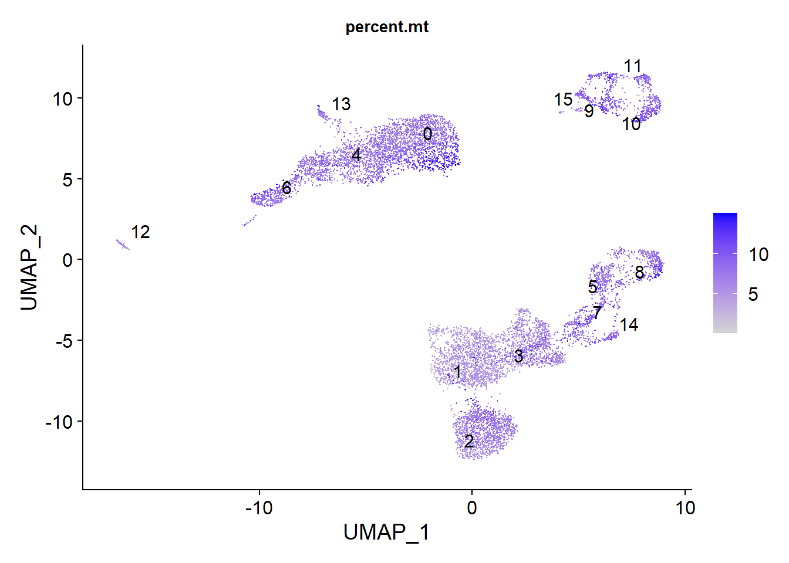
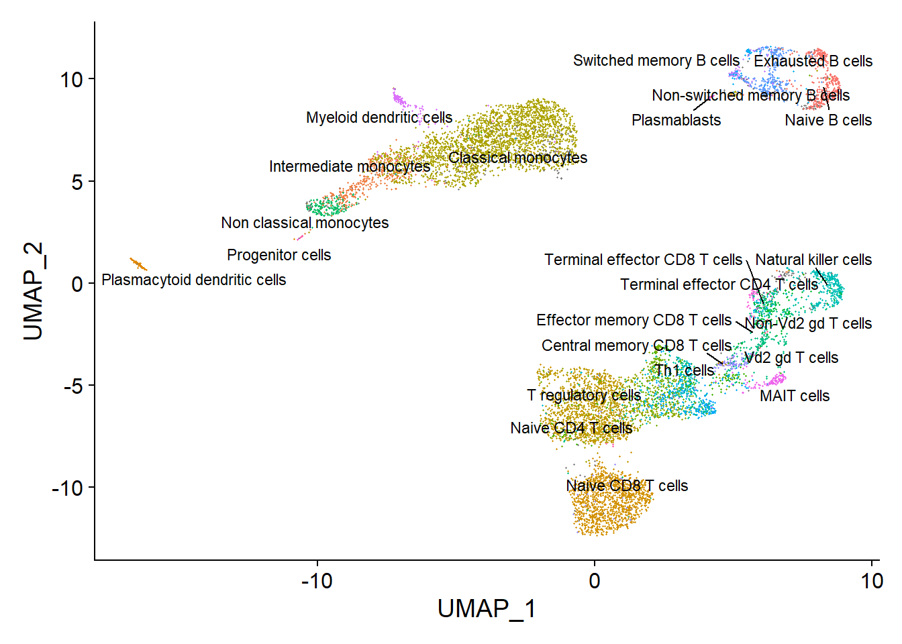

scRNA_seq
Reka_Toth
06 July, 2023
Last updated: 2023-07-06
Checks: 7 0
Knit directory: ROmics/
This reproducible R Markdown analysis was created with workflowr (version 1.7.0.4). The Checks tab describes the reproducibility checks that were applied when the results were created. The Past versions tab lists the development history.
Great! Since the R Markdown file has been committed to the Git repository, you know the exact version of the code that produced these results.
Great job! The global environment was empty. Objects defined in the global environment can affect the analysis in your R Markdown file in unknown ways. For reproduciblity it’s best to always run the code in an empty environment.
The command set.seed(20230606) was run prior to running
the code in the R Markdown file. Setting a seed ensures that any results
that rely on randomness, e.g. subsampling or permutations, are
reproducible.
Great job! Recording the operating system, R version, and package versions is critical for reproducibility.
Nice! There were no cached chunks for this analysis, so you can be confident that you successfully produced the results during this run.
Great job! Using relative paths to the files within your workflowr project makes it easier to run your code on other machines.
Great! You are using Git for version control. Tracking code development and connecting the code version to the results is critical for reproducibility.
The results in this page were generated with repository version 41d7682. See the Past versions tab to see a history of the changes made to the R Markdown and HTML files.
Note that you need to be careful to ensure that all relevant files for
the analysis have been committed to Git prior to generating the results
(you can use wflow_publish or
wflow_git_commit). workflowr only checks the R Markdown
file, but you know if there are other scripts or data files that it
depends on. Below is the status of the Git repository when the results
were generated:
Ignored files:
Ignored: .Rhistory
Ignored: .Rproj.user/
Untracked files:
Untracked: Course_plans.docx
Untracked: analysis/integration.Rmd
Untracked: data/10_x_pbmc/
Untracked: data/cell_cycle_vignette_files.zip
Untracked: data/idat/
Untracked: data/integration/
Untracked: data/mm9_Refseq_chr12.tsv
Untracked: data/normalized_rnb.set.RDS
Untracked: data/raw_rnb.set.RDS
Untracked: data/raw_rnbset_GSE175758.RDS
Untracked: data/sample_annotation.csv
Untracked: data/seurat_pbmc.RDS
Untracked: output/Genomic data.pptx
Untracked: output/diffmeth/
Unstaged changes:
Modified: analysis/GRanges.Rmd
Modified: analysis/methylation_plots.Rmd
Modified: analysis/reproducible_programming.Rmd
Modified: code/rnb_analysis.R
Note that any generated files, e.g. HTML, png, CSS, etc., are not included in this status report because it is ok for generated content to have uncommitted changes.
These are the previous versions of the repository in which changes were
made to the R Markdown (analysis/scRNA_seq.Rmd) and HTML
(docs/scRNA_seq.html) files. If you’ve configured a remote
Git repository (see ?wflow_git_remote), click on the
hyperlinks in the table below to view the files as they were in that
past version.
| File | Version | Author | Date | Message |
|---|---|---|---|---|
| Rmd | 41d7682 | tkik | 2023-07-06 | wflow_publish(c("analysis/scRNA_seq.Rmd", "analysis/scRNAseq_resources.Rmd")) |
Based on: Single cell course by Wellcome Sanger
library(Seurat)
library(ggplot2)
library(dplyr)adj.matrix <- Read10X("data/10_x_pbmc")
srat <- CreateSeuratObject(adj.matrix,project = "pbmc10k", min.cells = 5, min.features = 200)
srat
rm(adj.matrix)
gc()
saveRDS(srat, "data/seurat_pbmc.RDS")srat <- readRDS( "data/seurat_pbmc.RDS")
#optional
#srat <- srat[,sample(1:nrow(srat), 3000)]
head(srat@meta.data) orig.ident nCount_RNA nFeature_RNA
AAACCCACATAACTCG-1 pbmc10k 22195 4733
AAACCCACATGTAACC-1 pbmc10k 7629 2190
AAACCCAGTGAGTCAG-1 pbmc10k 21358 4246
AAACCCAGTGCTTATG-1 pbmc10k 857 342
AAACGAACAGTCAGTT-1 pbmc10k 15005 4073
AAACGAACATTCGGGC-1 pbmc10k 9854 2284library(SingleCellExperiment)
pbmc.sce <- as.SingleCellExperiment(srat)
library(iSEE)
app <- iSEE(pbmc.sce)Plot some QC data
srat[["percent.mt"]] <- PercentageFeatureSet(srat, pattern = "^MT")
srat[["percent.rb"]] <- PercentageFeatureSet(srat, pattern = "^RP[SL]")
VlnPlot(srat, features = c("nFeature_RNA", "nCount_RNA", "percent.mt", "percent.rb"), ncol = 4)FeatureScatter(srat, feature1 = "nCount_RNA", feature2 = "percent.mt")FeatureScatter(srat, feature1 = "nCount_RNA", feature2 = "percent.rb")srat[['QC']] <- "Pass"
srat[['QC']] <- ifelse(srat@meta.data$nFeature_RNA < 500 & srat@meta.data$QC == 'Pass','Low_nFeature',srat@meta.data$QC)
srat[['QC']] <- ifelse(srat@meta.data$percent.mt > 15, ifelse(srat@meta.data$QC=="Pass",'High_MT',paste0(srat@meta.data$QC, ", High_MT")), srat@meta.data$QC)
srat[['QC']] <- ifelse(srat@meta.data$nFeature_RNA > 5000, ifelse(srat@meta.data$QC=="Pass",'High_nFeature',paste0(srat@meta.data$QC, ", High_nFeature")), srat@meta.data$QC)
table(srat[['QC']])QC
High_MT High_nFeature Low_nFeature
574 152 18
Low_nFeature, High_MT Pass
182 9192 More sophisticated methods are available for finding duplex cell, it worth checking their suggestions.
srat <- srat[, srat$QC=="Pass"]
#srat <- subset(srat, subset = nFeature_RNA > 500 & nFeature_RNA < 5000 & percent.mt < 15)
VlnPlot(srat, features = c("nFeature_RNA", "nCount_RNA", "percent.mt", "percent.rb"), ncol = 4)Normalization of the data
srat <- NormalizeData(srat, normalization.method = "LogNormalize", scale.factor = 10000)
srat <- FindVariableFeatures(srat, selection.method = "vst", nfeatures = 2000)
top10 <- head(VariableFeatures(srat), 10)
plot1 <- VariableFeaturePlot(srat)
plot1 <- LabelPoints(plot = plot1, points = top10, repel = TRUE)
plot1 # scaling all the genes
all.genes <- rownames(srat)
srat <- ScaleData(srat, features = all.genes)Dimensionality reduction
srat <- RunPCA(srat, features = VariableFeatures(object = srat))
VizDimLoadings(srat, dims = 1:9, reduction = "pca") &
theme(axis.text=element_text(size=5), axis.title=element_text(size=8,face="bold"))DimHeatmap(srat, dims = 1:6, nfeatures = 20, cells = 500, balanced = T)DimPlot(srat, reduction = "pca")ElbowPlot(srat)##Clustering using kNN clustering
srat <- FindNeighbors(srat, dims = 1:10)
srat <- FindClusters(srat, resolution = 0.5)Modularity Optimizer version 1.3.0 by Ludo Waltman and Nees Jan van Eck
Number of nodes: 9192
Number of edges: 309371
Running Louvain algorithm...
Maximum modularity in 10 random starts: 0.9077
Number of communities: 14
Elapsed time: 0 secondssrat <- RunUMAP(srat, dims = 1:10, verbose = F)Warning: The default method for RunUMAP has changed from calling Python UMAP via reticulate to the R-native UWOT using the cosine metric
To use Python UMAP via reticulate, set umap.method to 'umap-learn' and metric to 'correlation'
This message will be shown once per sessionsrat@reductions$pca
A dimensional reduction object with key PC_
Number of dimensions: 50
Projected dimensional reduction calculated: FALSE
Jackstraw run: FALSE
Computed using assay: RNA
$umap
A dimensional reduction object with key UMAP_
Number of dimensions: 2
Projected dimensional reduction calculated: FALSE
Jackstraw run: FALSE
Computed using assay: RNA A very nice explanation on UMAP: (https://pair-code.github.io/understanding-umap/) How to interpret it and how not?
Visualization
library(ggsci)
DimPlot(srat,label.size = 4,repel = T,label = T)+scale_color_igv()FeaturePlot(srat, features = c("LILRA4", "TPM2", "PPBP", "GP1BB"))Checking QC once more:
FeaturePlot(srat, features = "nFeature_RNA") & theme(plot.title = element_text(size=10))FeaturePlot(srat, features = "percent.mt") & theme(plot.title = element_text(size=10))Try the same analysis with without excluding the cells not passing
Cell cycle correction
cc.genes.updated.2019$s.genes
[1] "MCM5" "PCNA" "TYMS" "FEN1" "MCM7" "MCM4"
[7] "RRM1" "UNG" "GINS2" "MCM6" "CDCA7" "DTL"
[13] "PRIM1" "UHRF1" "CENPU" "HELLS" "RFC2" "POLR1B"
[19] "NASP" "RAD51AP1" "GMNN" "WDR76" "SLBP" "CCNE2"
[25] "UBR7" "POLD3" "MSH2" "ATAD2" "RAD51" "RRM2"
[31] "CDC45" "CDC6" "EXO1" "TIPIN" "DSCC1" "BLM"
[37] "CASP8AP2" "USP1" "CLSPN" "POLA1" "CHAF1B" "MRPL36"
[43] "E2F8"
$g2m.genes
[1] "HMGB2" "CDK1" "NUSAP1" "UBE2C" "BIRC5" "TPX2" "TOP2A"
[8] "NDC80" "CKS2" "NUF2" "CKS1B" "MKI67" "TMPO" "CENPF"
[15] "TACC3" "PIMREG" "SMC4" "CCNB2" "CKAP2L" "CKAP2" "AURKB"
[22] "BUB1" "KIF11" "ANP32E" "TUBB4B" "GTSE1" "KIF20B" "HJURP"
[29] "CDCA3" "JPT1" "CDC20" "TTK" "CDC25C" "KIF2C" "RANGAP1"
[36] "NCAPD2" "DLGAP5" "CDCA2" "CDCA8" "ECT2" "KIF23" "HMMR"
[43] "AURKA" "PSRC1" "ANLN" "LBR" "CKAP5" "CENPE" "CTCF"
[50] "NEK2" "G2E3" "GAS2L3" "CBX5" "CENPA" s.genes <- cc.genes.updated.2019$s.genes
g2m.genes <- cc.genes.updated.2019$g2m.genes
srat <- CellCycleScoring(srat, s.features = s.genes, g2m.features = g2m.genes)
FeaturePlot(srat, features = "S.Score") & theme(plot.title = element_text(size=10))FeaturePlot(srat, features = "G2M.Score") & theme(plot.title = element_text(size=10))table(srat$Phase)
G1 G2M S
3831 1938 3423 DimPlot(srat, reduction = "umap", group.by = "Phase")#srat <- ScaleData(srat, vars.to.regress = c("S.Score", "G2M.Score"), features = rownames(srat))Normalization with SCTransform
srat <- SCTransform(srat, method = "glmGamPoi", ncells = 8824,
vars.to.regress = c("percent.mt","S.Score","G2M.Score"), verbose = F)
sratAn object of class Seurat
41028 features across 9192 samples within 2 assays
Active assay: SCT (20377 features, 3000 variable features)
1 other assay present: RNA
2 dimensional reductions calculated: pca, umapsrat <- RunPCA(srat, verbose = F)
srat <- RunUMAP(srat, dims = 1:30, verbose = F)
srat <- FindNeighbors(srat, dims = 1:30, verbose = F)
srat <- FindClusters(srat, verbose = F)
DimPlot(srat, label = T) + scale_color_igv()FeaturePlot(srat,features = "percent.mt",label.size = 4,repel = T,label = T) &
theme(plot.title = element_text(size=10))
VlnPlot(srat,features = "percent.mt")+scale_fill_igv() & theme(plot.title = element_text(size=10))VlnPlot(srat,features = "percent.rb")+scale_fill_igv() + theme(plot.title = element_text(size=10))Show marker genes
library(RColorBrewer)
FeaturePlot(srat,"LILRA4") &
scale_colour_gradientn(colours = rev(brewer.pal(n = 11, name = "Spectral")))FeaturePlot(srat,"MS4A1") +
scale_colour_gradientn(colours = rev(brewer.pal(n = 11, name = "Spectral"))) + ggtitle("MS4A1: B cells")FeaturePlot(srat,"LYZ") +
scale_colour_gradientn(colours = rev(brewer.pal(n = 11, name = "Spectral"))) + ggtitle("LYZ: monocytes")
FeaturePlot(srat,"NKG7") +
scale_colour_gradientn(colours = rev(brewer.pal(n = 11, name = "Spectral"))) + ggtitle("NKG7: natural killers")FeaturePlot(srat,"CD8B") +
scale_colour_gradientn(colours = rev(brewer.pal(n = 11, name = "Spectral"))) + ggtitle("CD8B: CD8 T cells")FeaturePlot(srat,"IL7R") +
scale_colour_gradientn(colours = rev(brewer.pal(n = 11, name = "Spectral"))) + ggtitle("IL7R: CD4 T cells")VlnPlot(srat,features = c("LILRA4","MS4A1", "LYZ", "NKG7", "CD8B", "IL7R")) &
theme(plot.title = element_text(size=10))Differential gene expression and marker identification
all.markers <- FindAllMarkers(srat, only.pos = T, min.pct = 0.5, logfc.threshold = 0.5)
top5_markers <- as.data.frame(all.markers %>% group_by(cluster) %>% top_n(n = 5, wt = avg_log2FC))
top5_markers p_val avg_log2FC pct.1 pct.2 p_val_adj cluster gene
1 0.000000e+00 4.310575 0.994 0.276 0.000000e+00 0 S100A8
2 0.000000e+00 4.121278 0.994 0.334 0.000000e+00 0 S100A9
3 0.000000e+00 3.003041 0.987 0.159 0.000000e+00 0 VCAN
4 0.000000e+00 2.995073 0.967 0.107 0.000000e+00 0 S100A12
5 0.000000e+00 2.935292 0.994 0.358 0.000000e+00 0 LYZ
6 0.000000e+00 1.111249 0.906 0.363 0.000000e+00 1 TCF7
7 0.000000e+00 1.097327 0.991 0.677 0.000000e+00 1 LDHB
8 0.000000e+00 1.055345 0.881 0.384 0.000000e+00 1 BCL11B
9 0.000000e+00 1.029400 0.818 0.278 0.000000e+00 1 CCR7
10 3.126633e-210 1.176201 0.690 0.312 6.371140e-206 1 TRBC1
11 0.000000e+00 2.246119 0.979 0.083 0.000000e+00 2 CD8B
12 0.000000e+00 1.515782 0.675 0.030 0.000000e+00 2 LINC02446
13 0.000000e+00 1.462175 0.870 0.090 0.000000e+00 2 CD8A
14 0.000000e+00 1.165595 0.832 0.130 0.000000e+00 2 KLRK1
15 1.636253e-294 1.063198 0.961 0.539 3.334193e-290 2 NOSIP
16 0.000000e+00 1.600936 0.992 0.537 0.000000e+00 3 IL32
17 0.000000e+00 1.555778 0.997 0.677 0.000000e+00 3 LTB
18 5.534177e-269 1.393306 0.943 0.456 1.127699e-264 3 IL7R
19 3.474426e-253 1.214024 0.771 0.345 7.079837e-249 3 ITGB1
20 4.161919e-195 1.105205 0.937 0.668 8.480743e-191 3 CRIP1
21 0.000000e+00 2.061647 0.862 0.187 0.000000e+00 4 APOBEC3A
22 0.000000e+00 2.013142 0.986 0.339 0.000000e+00 4 IFITM3
23 0.000000e+00 1.993239 0.968 0.299 0.000000e+00 4 MARCKS
24 0.000000e+00 1.984605 0.995 0.337 0.000000e+00 4 FGL2
25 0.000000e+00 1.884250 0.993 0.498 0.000000e+00 4 TNFSF10
26 0.000000e+00 3.481146 1.000 0.152 0.000000e+00 5 NKG7
27 0.000000e+00 3.435491 0.995 0.120 0.000000e+00 5 CCL5
28 0.000000e+00 3.303899 0.943 0.037 0.000000e+00 5 GZMH
29 0.000000e+00 3.246315 0.962 0.072 0.000000e+00 5 GNLY
30 0.000000e+00 2.605827 0.981 0.123 0.000000e+00 5 GZMA
31 0.000000e+00 3.790013 0.997 0.134 0.000000e+00 6 FCGR3A
32 0.000000e+00 3.563433 0.912 0.027 0.000000e+00 6 CDKN1C
33 0.000000e+00 2.715926 0.965 0.210 0.000000e+00 6 MS4A7
34 2.648630e-244 2.806674 1.000 0.457 5.397113e-240 6 LST1
35 4.223137e-243 2.825528 1.000 0.383 8.605487e-239 6 IFITM3
36 0.000000e+00 2.909936 0.839 0.038 0.000000e+00 7 GZMK
37 0.000000e+00 2.646777 0.929 0.128 0.000000e+00 7 CCL5
38 4.294147e-198 1.575582 0.774 0.135 8.750183e-194 7 GZMA
39 1.048187e-121 1.492816 1.000 0.575 2.135892e-117 7 IL32
40 1.241551e-102 1.279313 0.671 0.208 2.529908e-98 7 DUSP2
41 0.000000e+00 4.849782 1.000 0.077 0.000000e+00 8 GNLY
42 0.000000e+00 3.852437 1.000 0.158 0.000000e+00 8 NKG7
43 0.000000e+00 3.257173 0.984 0.106 0.000000e+00 8 PRF1
44 0.000000e+00 2.925507 0.954 0.130 0.000000e+00 8 GZMA
45 0.000000e+00 2.818796 0.836 0.078 0.000000e+00 8 CCL4
46 0.000000e+00 3.688433 0.997 0.075 0.000000e+00 9 IGKC
47 0.000000e+00 2.886977 0.993 0.071 0.000000e+00 9 MS4A1
48 0.000000e+00 2.791852 1.000 0.104 0.000000e+00 9 CD79A
49 0.000000e+00 2.273945 0.976 0.085 0.000000e+00 9 BANK1
50 2.557792e-297 2.799055 0.742 0.082 5.212013e-293 9 IGHM
51 0.000000e+00 3.666833 0.996 0.075 0.000000e+00 10 IGHM
52 0.000000e+00 3.450344 0.993 0.076 0.000000e+00 10 IGKC
53 0.000000e+00 3.027467 0.968 0.023 0.000000e+00 10 TCL1A
54 0.000000e+00 2.883451 1.000 0.105 0.000000e+00 10 CD79A
55 0.000000e+00 2.869256 0.982 0.045 0.000000e+00 10 IGHD
56 0.000000e+00 4.401373 0.851 0.014 0.000000e+00 11 IGLC2
57 0.000000e+00 3.817843 0.695 0.008 0.000000e+00 11 IGLC3
58 0.000000e+00 3.397584 0.885 0.080 0.000000e+00 11 IGHM
59 0.000000e+00 2.880247 0.996 0.107 0.000000e+00 11 CD79A
60 0.000000e+00 2.768997 0.992 0.074 0.000000e+00 11 MS4A1
61 0.000000e+00 3.612316 0.853 0.044 0.000000e+00 12 JCHAIN
62 1.460259e-244 4.256712 0.835 0.060 2.975570e-240 12 GZMB
63 1.887091e-200 3.467866 0.862 0.085 3.845326e-196 12 PLD4
64 9.813899e-157 3.604597 0.862 0.114 1.999778e-152 12 ITM2C
65 1.618516e-127 3.501312 0.862 0.146 3.298051e-123 12 TCF4
66 0.000000e+00 2.911873 0.798 0.007 0.000000e+00 13 FCER1A
67 2.032797e-266 2.569061 0.875 0.057 4.142231e-262 13 CLEC10A
68 5.361890e-89 3.049338 1.000 0.296 1.092592e-84 13 HLA-DQA1
69 2.091102e-67 2.725693 1.000 0.526 4.261039e-63 13 HLA-DPB1
70 1.830827e-62 2.559244 1.000 0.539 3.730676e-58 13 HLA-DPA1
71 0.000000e+00 2.651979 0.971 0.055 0.000000e+00 14 GZMK
72 1.887285e-196 3.422114 1.000 0.118 3.845720e-192 14 KLRB1
73 1.514846e-127 2.102685 0.990 0.147 3.086802e-123 14 GZMA
74 1.228507e-126 1.968356 0.856 0.127 2.503329e-122 14 NCR3
75 1.055177e-107 2.061135 1.000 0.177 2.150135e-103 14 NKG7
76 7.997163e-81 9.018062 0.929 0.032 1.629582e-76 15 IGLC1
77 6.062644e-70 9.960242 0.929 0.038 1.235385e-65 15 IGHA1
78 1.527601e-61 7.099974 1.000 0.052 3.112792e-57 15 JCHAIN
79 1.994398e-43 5.597549 0.571 0.022 4.063985e-39 15 IGHG1
80 5.779482e-17 8.267811 0.714 0.103 1.177685e-12 15 IGKCDotPlot(srat, features = unique(top5_markers$gene)) + RotatedAxis()
Cell type annotation
library(SingleR)
library(celldex)
monaco.ref <- celldex::MonacoImmuneData()
sce <- as.SingleCellExperiment(DietSeurat(srat))
monaco.main <- SingleR(test = sce,assay.type.test = 1,ref = monaco.ref,labels = monaco.ref$label.main)
monaco.fine <- SingleR(test = sce,assay.type.test = 1,ref = monaco.ref,labels = monaco.ref$label.fine)
srat@meta.data$monaco.main <- monaco.main$pruned.labels
srat@meta.data$monaco.fine <- monaco.fine$pruned.labels
srat <- SetIdent(srat, value = "monaco.fine")
DimPlot(srat, label = T , repel = T, label.size = 3) + NoLegend()Warning: ggrepel: 4 unlabeled data points (too many overlaps). Consider
increasing max.overlaps
Easily available datasets for annotation
https://hemberg-lab.github.io/scRNA.seq.datasets/ https://bioconductor.org/packages/release/data/experiment/html/scRNAseq.html https://www.ebi.ac.uk/gxa/sc/experiments https://www.humancellatlas.org/ https://bis.zju.edu.cn/MCA/
Other possible applications
Copy number analysis
Variant calling
Velocity analysis
sessionInfo()R version 4.2.3 (2023-03-15 ucrt)
Platform: x86_64-w64-mingw32/x64 (64-bit)
Running under: Windows 10 x64 (build 19042)
Matrix products: default
locale:
[1] LC_COLLATE=English_United States.utf8
[2] LC_CTYPE=English_United States.utf8
[3] LC_MONETARY=English_United States.utf8
[4] LC_NUMERIC=C
[5] LC_TIME=English_United States.utf8
attached base packages:
[1] stats4 stats graphics grDevices utils datasets methods
[8] base
other attached packages:
[1] celldex_1.8.0 SingleR_2.0.0
[3] SummarizedExperiment_1.28.0 Biobase_2.58.0
[5] GenomicRanges_1.50.2 GenomeInfoDb_1.34.9
[7] IRanges_2.32.0 S4Vectors_0.36.1
[9] BiocGenerics_0.44.0 MatrixGenerics_1.10.0
[11] matrixStats_0.63.0 RColorBrewer_1.1-3
[13] ggsci_3.0.0 dplyr_1.1.0
[15] ggplot2_3.4.2 SeuratObject_4.1.3
[17] Seurat_4.3.0 workflowr_1.7.0.4
loaded via a namespace (and not attached):
[1] utf8_1.2.3 spatstat.explore_3.2-1
[3] reticulate_1.30 tidyselect_1.2.0
[5] RSQLite_2.3.0 AnnotationDbi_1.60.2
[7] htmlwidgets_1.6.2 grid_4.2.3
[9] BiocParallel_1.32.5 Rtsne_0.16
[11] munsell_0.5.0 ScaledMatrix_1.6.0
[13] codetools_0.2-19 ica_1.0-3
[15] future_1.32.0 miniUI_0.1.1.1
[17] withr_2.5.0 spatstat.random_3.1-5
[19] colorspace_2.1-0 progressr_0.13.0
[21] filelock_1.0.2 highr_0.10
[23] knitr_1.43 rstudioapi_0.14
[25] SingleCellExperiment_1.20.1 ROCR_1.0-11
[27] tensor_1.5 listenv_0.9.0
[29] labeling_0.4.2 git2r_0.30.1
[31] GenomeInfoDbData_1.2.9 polyclip_1.10-4
[33] bit64_4.0.5 farver_2.1.1
[35] rprojroot_2.0.3 parallelly_1.36.0
[37] vctrs_0.5.2 generics_0.1.3
[39] xfun_0.39 BiocFileCache_2.6.1
[41] R6_2.5.1 ggbeeswarm_0.7.2
[43] rsvd_1.0.5 bitops_1.0-7
[45] spatstat.utils_3.0-3 cachem_1.0.6
[47] DelayedArray_0.23.2 promises_1.2.0.1
[49] scales_1.2.1 beeswarm_0.4.0
[51] gtable_0.3.3 beachmat_2.14.2
[53] globals_0.16.2 processx_3.7.0
[55] goftest_1.2-3 rlang_1.1.1
[57] splines_4.2.3 lazyeval_0.2.2
[59] spatstat.geom_3.2-1 BiocManager_1.30.21
[61] yaml_2.3.6 reshape2_1.4.4
[63] abind_1.4-5 httpuv_1.6.6
[65] tools_4.2.3 ellipsis_0.3.2
[67] jquerylib_0.1.4 ggridges_0.5.4
[69] Rcpp_1.0.9 plyr_1.8.8
[71] sparseMatrixStats_1.10.0 zlibbioc_1.44.0
[73] purrr_1.0.1 RCurl_1.98-1.10
[75] ps_1.7.0 deldir_1.0-9
[77] pbapply_1.7-0 cowplot_1.1.1
[79] zoo_1.8-12 ggrepel_0.9.3
[81] cluster_2.1.4 fs_1.5.2
[83] magrittr_2.0.3 data.table_1.14.8
[85] glmGamPoi_1.10.2 scattermore_1.2
[87] lmtest_0.9-40 RANN_2.6.1
[89] whisker_0.4.1 fitdistrplus_1.1-11
[91] patchwork_1.1.2 mime_0.12
[93] evaluate_0.21 xtable_1.8-4
[95] gridExtra_2.3 compiler_4.2.3
[97] tibble_3.1.8 crayon_1.5.2
[99] KernSmooth_2.23-20 htmltools_0.5.4
[101] later_1.3.0 tidyr_1.3.0
[103] DBI_1.1.3 ExperimentHub_2.6.0
[105] dbplyr_2.3.2 rappdirs_0.3.3
[107] MASS_7.3-58.2 Matrix_1.5-3
[109] cli_3.6.0 parallel_4.2.3
[111] igraph_1.5.0 pkgconfig_2.0.3
[113] getPass_0.2-2 sp_1.6-1
[115] plotly_4.10.2 spatstat.sparse_3.0-1
[117] vipor_0.4.5 bslib_0.5.0
[119] XVector_0.38.0 stringr_1.5.0
[121] callr_3.7.3 digest_0.6.29
[123] sctransform_0.3.5 RcppAnnoy_0.0.20
[125] Biostrings_2.66.0 spatstat.data_3.0-1
[127] rmarkdown_2.22 leiden_0.4.3
[129] uwot_0.1.14 DelayedMatrixStats_1.20.0
[131] curl_5.0.0 shiny_1.7.4
[133] lifecycle_1.0.3 nlme_3.1-162
[135] jsonlite_1.8.5 viridisLite_0.4.2
[137] limma_3.54.1 fansi_1.0.4
[139] pillar_1.9.0 lattice_0.20-45
[141] KEGGREST_1.38.0 ggrastr_1.0.2
[143] fastmap_1.1.0 httr_1.4.6
[145] survival_3.5-3 interactiveDisplayBase_1.36.0
[147] glue_1.6.2 png_0.1-8
[149] BiocVersion_3.16.0 bit_4.0.5
[151] stringi_1.7.8 sass_0.4.6
[153] blob_1.2.4 AnnotationHub_3.6.0
[155] BiocSingular_1.14.0 memoise_2.0.1
[157] irlba_2.3.5.1 future.apply_1.11.0